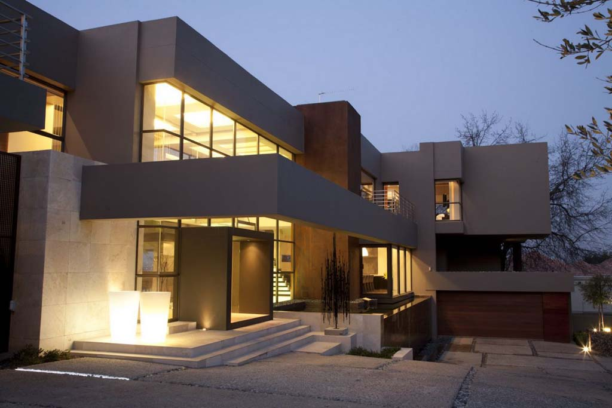

Partneri firme KOMOCHEM d.o.o Visoko
Komochem sarađuje sa mnogim firmama, a neke od njih su :
Firma KOMOCHEM d.o.o. je osnovana 2002 godine, a kao rezultat dugogodišnjeg rada i iskustva osnivača u sličnim proizvodnjama.
Smještena je uz putnu komunikaciju, sjeverno od grada Visoko, na lokaciji od 5000 m 2 i u 2000 m 2 poslovnog prostora.
Raspolaže sa najmodernijom tehnološkom opremom za proizvodnju boja ljepila i fasada, ali isto tako i sa visoko obrazovanim stručnim kadrom.
Proces prizvodnje je usklađen sa svim ekološkim normana. Naši proizvodi su neotrovni, nezapaljivi i ne štete zdravlju ljudi. Posebnu pažnju smo posvetili izboru sirovina i tehnoloških procesa koji ne zagađuju okolinu. KOMOCHEM je počeo brinuti o zaštiti okoline prije nego većina nastajućih firmi, pa su ekološki standardi primjenjeni od samog početka proizvodnje.
Opredjeljenje firme je proizvodnja izrazito kvalitetnih proizvoda uz stalno praćenje najnovijih evropskih trendova iz ove oblasti.
Naš cilj nije samo da prodamo naše proizvode već da ponudimo našim kupcima tačno ono što im je potrebno. Jedna od tajni našeg uspjeha je i nuđenje specifičnih riješenja koja su prilagoćena određenom kupcu ili grupi kupaca.
Ovakav pristup poslovanju je omogućio kontinuirani razvoj, proširivanje proizvodnog asortimana i značajne godišnje stope rasta proizvodnje.